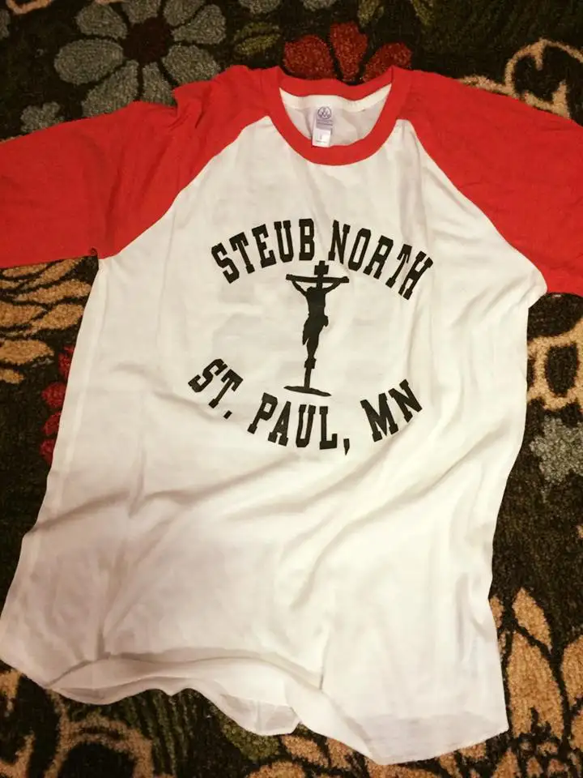
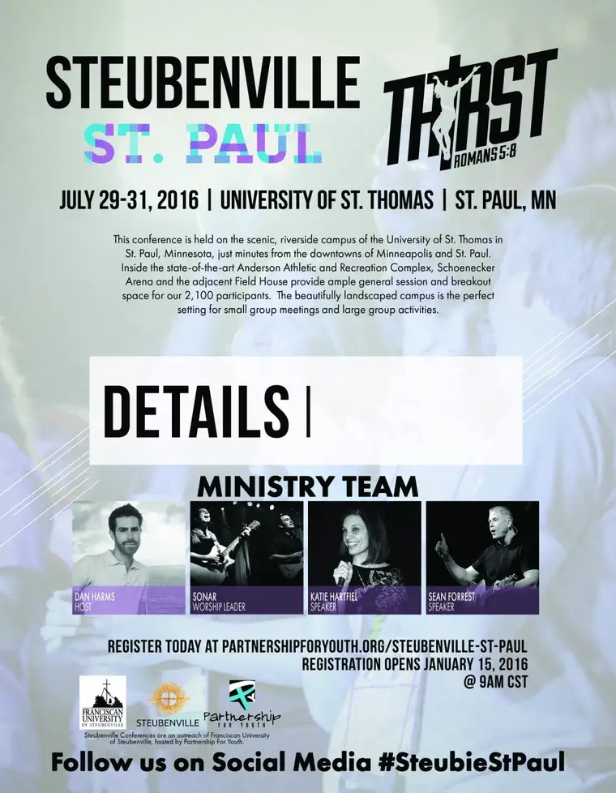

By the time this posts, I’ll be packed and sporting this shirt, along with a group of youth and other adult guides, heading East.

For months, my middle girl has been getting ready for her journey to Steubenville of the North, a youth conference originating from Franciscan University Steubenville in Ohio that now takes place at other sites to expand its reach.

There will be praying, and singing, and adoring our Lord in the Eucharist. I’ve been excited for my daughter to experience this. I can’t help but think back to when I was her age, attending my first SEARCH retreat. It was life-changing for me. It put me in touch with the living God in a way I had not experienced him before, and awakened my young soul. I knew, from that experience and the seeds planted before, that he was real and interested in my life.
Now, over 30 years later, he’s reminding me of his realness, as well as his continued interest in my life, and that of my family.
A few weeks back, I was called to see if I’d be willing to be a chaperone for this event. My July was light on activities and I delighted in the thought of being part of this young crew, only to find out I wouldn’t be needed after all. I’d already begun work on reordering things, and mentally preparing, so it was disappointing to change courses. But I accepted God’s will.
Then, the winds changed, and it turned out I was needed after all. So though I am only now really absorbing everything this trip is going to be, I am doubly grateful for the chance, the re-chance, to go.
I’m a sucker for going out in the world in search of God. I feel like that’s one of my main quests in life. So, this trip seems right up my ally. And yet, I know full well it’s not about me. I’m there to support, to guide, to process, yes, but more than anything, it’s for them — the young people who are our future.
Wednesday night we attended a retreat to prepare. I got a glimpse of my travel companions. I learned that we’d be stopping at a few choice locations along the way, including St. John’s University, where the largest group of Benedictine monks IN THE WORLD is gathered. We will pray with them, and dine with them, before moving on to St. Paul.
There, we’ll visit the Cathedral of St. Paul. Though I’ve driven by it many times, it’s been years since I’ve stepped foot inside, and then, only briefly during a college choir trip, around spring 1989. We stayed just long enough to raise our voices to heaven in the front atrium — a memorable moment or two.
And then, we’ll proceed to the conference at the University of St. Thomas, and to our dorms. I’m honestly excited to experience dorm life again for a few days! (We can endure anything in small amounts, right?)
Part of our preparation included Adoration and praise music, to get our hearts ready for what we’re about to experience. I have a special and specific prayer for this journey, and I’m offering up all of my sufferings along the way, large or small, for this intention. I’m expecting big things from God. After all, he’s the God of the universe, and he’s promised us a lot. And I know he’s good for it. He will deliver. It’s just a matter of how, and when.
I’ll be watching, waiting, experiencing, praying. Please pray for our journey, that the hearts of these young people will be touched and enlivened as mine was all those years ago — and I’m sure yours has been at some point — along the way.
Q4U: When was your young heart first touched by God in a significant way? Please share your remembrance of that time.